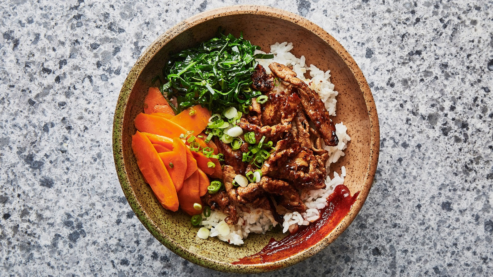

Excess Food
Quick Recipe
Spicy Pork

Ingredients
- 2 tablespoons hot chili paste (I like sambal oelek, but sriracha can also work)
- 2 tablespoons soy sauce
- 2 tablespoons brown sugar
- 3 cloves garlic, minced
- 1 1-inch piece of ginger, peeled and finely grated
- 1 garlic clove, finely grated1 1/2 pounds pork tenderloin, very thinly sliced
- vegetable oil
Methods
- Shake all the sauce ingredients in a jar. Pour the sauce over the pork and allow it to rest for 20 minutes – 1 hour.
- Heat a good searing skillet (such as cast iron) over high heat. Add just a little bit of vegetable oil.
- When the oil is hot and shiny, add the pork in a single layer (you may need to do this in batches). Cook, undisturbed, for 1-2 minutes until you are getting that nice caramelized look. Flip and repeat to finish.
- That’s it! Enjoy your flavour town masterpiece.